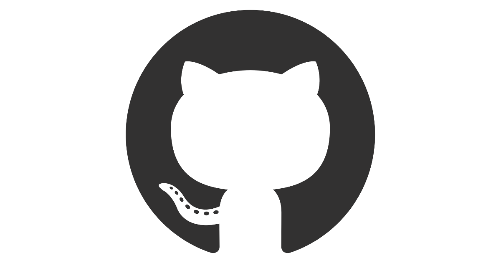

GH_Training 
Setup
Notifications
Organizations and Project Boards
Examples
Practice
Contributing
Release Notes
Glossary of Terms
GH_Training
»
Index
Edit on GitHub
Index
Symbols
|
A
|
B
|
C
|
D
|
F
|
I
|
L
|
M
|
O
|
P
|
R
|
S
|
U
|
V
|
W
Symbols
@mention
A
access token
authentication code
B
base branch
branch restriction
C
checkout
clone
code owner
collaborator
commit
commit author
commit ID
commit message
continuous integration
contributor
D
default branch
F
feature branch
fetch
fork
I
issue
L
label
license
M
Markdown
master
merge
merge conflict
metadata
milestone
O
origin
P
private repository
protected branch
public repository
pull
pull request
pull request review
push
push a branch
R
read access
README
rebase
release
remote
remote repository
repository
S
security log
software package
SSH key
Status checks
U
upstream
upstream branch
V
version control system
W
watching notifications
write access